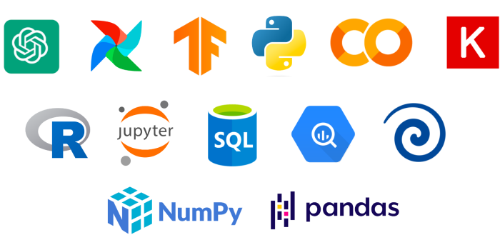

Cómo la IA Está Cambiando el Desarrollo de Software
21 de junio, 2023
La inteligencia artificial está revolucionando la forma en que creamos software. Analizamos herramientas y metodologías que todo desarrollador debería conocer.
Leer másEl Máster en Inteligencia Artificial te proporciona las habilidades necesarias para desarrollar e implementar soluciones basadas en IA, desde algoritmos de aprendizaje automático hasta sistemas de procesamiento de lenguaje natural. Aprenderás a:

Comprende los principios básicos de la inteligencia artificial y el aprendizaje automático.
Aprende a desarrollar modelos predictivos con datos etiquetados.
Domina las redes neuronales y sus aplicaciones avanzadas.
Desarrolla aplicaciones capaces de entender y generar lenguaje humano.
Crea sistemas que puedan interpretar y procesar información visual.
Desarrolla una solución completa de IA aplicando todos los conocimientos adquiridos.
21 de junio, 2023
La inteligencia artificial está revolucionando la forma en que creamos software. Analizamos herramientas y metodologías que todo desarrollador debería conocer.
Leer más8 de mayo, 2023
El desarrollo de sistemas de inteligencia artificial plantea importantes cuestiones éticas. Exploramos los principales desafíos y las mejores prácticas para abordarlos.
Leer másInscríbete ahora y comienza tu camino hacia una de las carreras con mayor proyección en el panorama tecnológico actual.